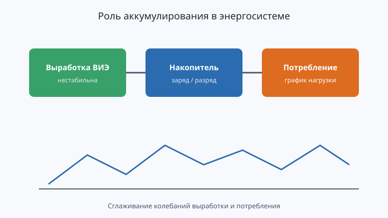

Глава 9. Теоретические основы аккумулирования энергии
9.1 Понятие и роль аккумулирования энергии
Аккумулирование энергии — это запасение энергии в удобной форме с целью её последующего использования. Аккумулирование является важнейшим элементом для балансировки возобновляемой энергетики, поскольку выработка солнца и ветра нестабильна во времени.
Накопители энергии позволяют согласовать графики выработки и потребления: запасать избыточную энергию в периоды низкого потребления и отдавать её в периоды пиковой нагрузки. Это повышает надёжность и эффективность возобновляемых источников энергии (ВИЭ).
Аккумулирование также применяется для сглаживания суточных и сезонных колебаний, обеспечения бесперебойного питания и повышения качества электроэнергии.

Эффективность накопителя характеризуется КПД цикла «заряд–разряд», удельной энергоёмкостью, удельной мощностью и сроком службы.
9.2 Виды накопителей энергии
Накопители энергии классифицируются по физическому принципу действия. Основные виды:
- Электрохимические — аккумуляторные батареи, запасающие энергию в химической форме.
- Механические — маховичные накопители и гидроаккумулирующие электростанции (ГАЭС).
- Электрические — суперконденсаторы, запасающие энергию в электрическом поле.
- Тепловые — накопление тепла в теплоносителях (вода, расплавы солей, грунт).
Каждый вид накопителя имеет свои преимущества и ограничения по ёмкости, мощности, скорости заряда и разряда, сроку службы и стоимости.

9.3 Параметры и области применения накопителей
Основные параметры накопителей энергии:
- Энергоёмкость — количество энергии, которое может запасти накопитель (кВт·ч).
- Мощность — скорость выдачи или приёма энергии (кВт).
- КПД цикла — доля энергии, возвращаемой при разряде, от энергии, затраченной при заряде.
- Срок службы — число циклов заряда–разряда до снижения ёмкости.
Области применения накопителей: балансировка энергосистемы, сглаживание выработки ВИЭ, бесперебойное питание, электротранспорт, бытовые и промышленные системы.

Проверка знаний
-
Что такое аккумулирование энергии?
Запасение энергии в удобной форме с целью её последующего использования; важнейший элемент балансировки возобновляемой энергетики.
-
Что такое аккумуляторная батарея?
Электрохимическое устройство для накопления и хранения электрической энергии; может быть перезаряжено.
-
Что такое маховичный накопитель?
Механический аккумулятор, запасающий энергию во вращающемся маховике; способен быстро отдавать и принимать мощность.
-
Что такое гидроаккумулирующая электростанция (ГАЭС)?
Станция, перекачивающая воду в верхний бассейн при избытке энергии и вырабатывающая электричество при её дефиците.
-
Что такое суперконденсатор?
Устройство, запасающее энергию в электрическом поле двойного электрического слоя; сочетает большую ёмкость с высокой мощностью.
-
Назовите основные параметры накопителей энергии.
Энергоёмкость, мощность, КПД цикла, срок службы.